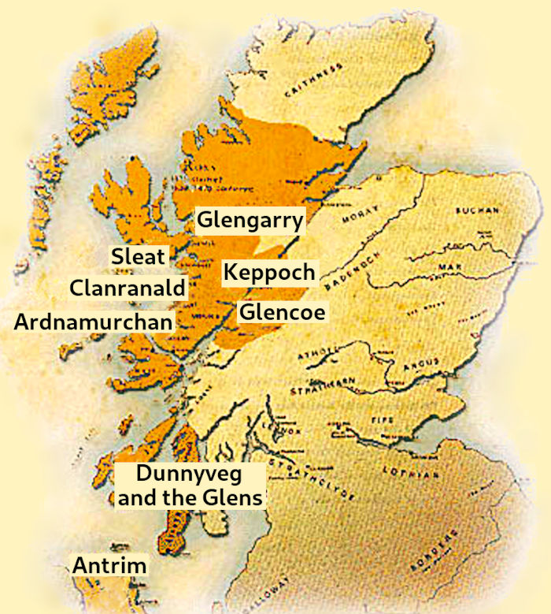
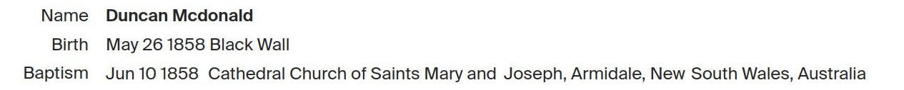
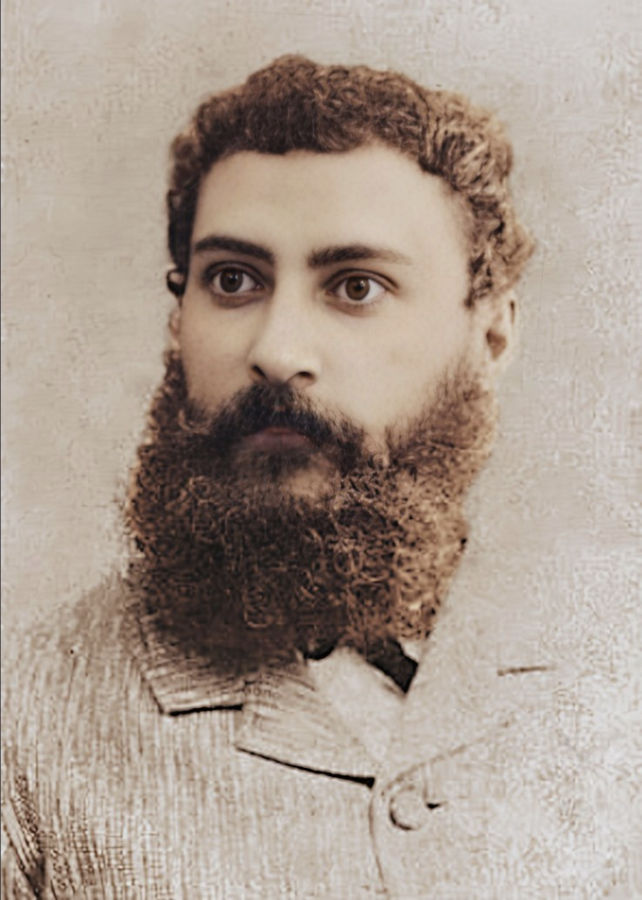
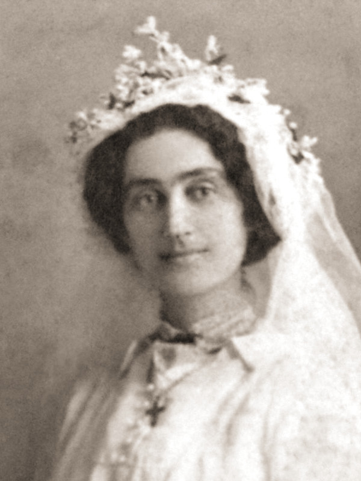
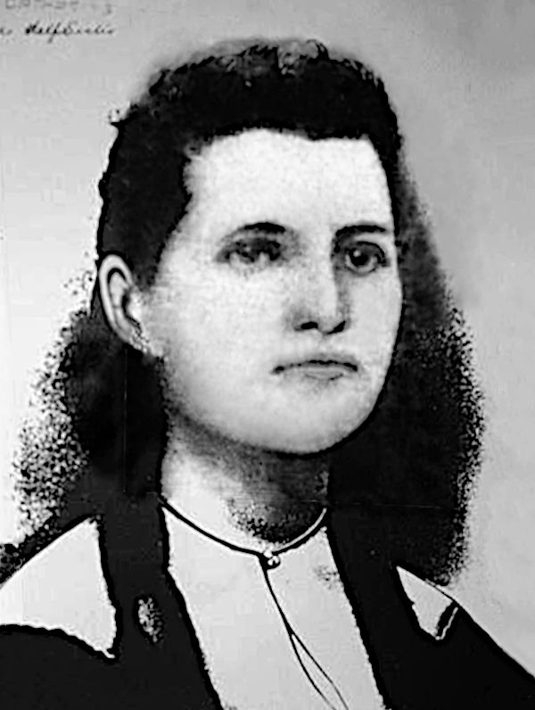

-

The McDonalds
variously written as McDonald, MacDonald, Mcdonald, Macdonald, McDonnell, Macdonnell etc.
Our family has a lot of McDonalds and the name John McDonald pops up all over the place.
Some examples are:
John McDonald m. Margaret Stamp
John McDonald m. Ethel Benson
John McDonald m. Elizabeth May Campbell
John McDonald m. Frances Chapman
John MacDonald (brother of Ernest Allen MacDonald)
John MacDonald m. Bridget Shea (grandparents of Ernest Allen, m. Mildred Pieper)
John McDonald m. Flora Kennedy (parents of » Catherine (McDonald) Halling)
John McDonald m. Elizabeth May (parents of » Alexander Duncan McDonald)
John McDonald m. Jessie McIntyre (parents of » Jessie (McDonald) Fenwick)

Norse Warrior
from the Lewis ChessmenOrigins
Legend has it that the MacDonalds ultimately descend from Somerled (or Somhairlidh, d.1164), the Norse-Gaelic King of the western Scottish Isles, accredited with freeing the Gaelic people from their ancient Norse rule. This was achieved by Somerled declaring himself to be their new Gaelic ruler.He was in a good position to do that, as he was already their current Norse overlord.
Red Book of Clan Donald tales
Somerled married Ragnhild, daughter of Óláfr Guðrøðarson, the King of Man. When Olaf died his son Godred, Somerled's brother-in-law, took over. This made everyone else rather unhappy. Consequently Thorfinn Ottarson, a Manx chief wanted Somerled's son Dugall to be the new king. Somerled set himself against Godred in a sea battle and as a result, the kindom was split in two; half for Godred, half for Dugall.
So Godred and Dugall took up running the place but they too couldn't settle on a peaceful existence and fought each other for supremacy. Dugall won out but that still didn't bring peace. There continued to be disputes over rightful patrilineal descendancy and ownership between Dugall and his brother Ranald. This brought about a further split.
Dugall's descendants included the Lords of Argyll and the Clan MacDougall. The descendants of Dugall's brother Ranald included the Lords of the Isles, Clan Donald, Clan MacRory, and Clan MacAlister. The MacDonalds of Clan Donald traditionally derive their name from the legendary son of Ranald (or Ragnhall) known as Donald (or Domhnall) who lived around 1192.MacDonald Clans in Scotland
To complicate matters further, Somerled's wife, Ragnhild and her family also staked their matrilineal claims. As a result a lot of MacDonald clans sprang up alongside each other. Nevertheless there remained in all of them a certain feistiness that prevailed over most of western Scotland.
In the 15th century after innumerable battles with the kings of Scotland, the MacDonalds emerged as the Earls of Ross. But this glory was short lived when in 1475 James III stripped them of those titles and lands. As a final blow, James IV enforced forfeiture of all titles and claims to Lord of the Isles. The McDonalds swore allegiance to restore it. Many of them also took to fighting for the Jacobite cause.
Clan Donald, MacDonald or McDonell?
The variations in spelling of the surnames for the descendants of the clans are from many attempts over time at anglicising the original Gaelic forms. The Gaelic form of the patronymic name is MacDhòmhnaill, literally son of Dòmhnall.
There are a number of officially recognised branches of the clan, namely Clan MacDonald of Keppoch, Clan MacDonell of Glengarry, Clan Macdonald of Sleat, Clan Macdonald of Clanranald and Clan MacAlister.
Also deserving mention are historic branches such as Clan MacDonald of Dunnyveg, Clan MacDonald of Lochalsh, the MacDonalds of Glencoe, the MacDonalds of Ardnamurchan, and in Ireland there is also a cadet branch, the MacDonnells of Antrim.
For centuries, Clan Donald chiefs carried the title, Lord of the Isles. John of Islay (John MacDonald) was the fourth and last Lord of the Isles, the lordship having been terminated in 1493 by James IV. John was the son of Alexander of Islay, 3rd Lord of the Isles, Earl of Ross and his wife Elizabeth Seton the daughter of Alexander, Lord of Gordon and Huntly. Alexander and his forces had fought against the royalist army of James I at the battle of Lochaber in 1429 but was defeated and imprisoned. Two years later Alexander's cousin (or nephew) Dòmhnall Ballach Mac Dhòmhnaill took up the cudgel and lead the MacDonalds to victory at the battle of Inverlochy.
The Redshanks
In the early 16th century, after the demise of the clan's titles and rights, the MacDonalds were banished from their lands and rendered homeless and unemployed. Naturally they had to look for something else to keep them busy. Fighting was their specialty so many of them turned to mercenary work and joined the redshanks.
A Lochaber Axe
They were called that because they were renowned for being a rather rugged bunch, dressed in plaids with bare legs and bare feet yet still capable of wading through icy cold water, which naturally enough made their shanks go very red. They were armed to the teeth with a short bow, a two-handed claymore and a Lochaber axe. Later they adopted the targe, a single handed broadsword, and then the musket. Armed in that manner, the redshanks could attack with a volley of gunshots and then charge with sword and targe.
As an extra bonus, in times of peace the Lochaber Axe could also also be employed as a scythe down on the farm. And the hook on the end made it handy to hang neatly on the barn wall.
With Birlinns, by Sea, by Land
The clan crest is encircled by the motto in Latin 'Per Mare - Per Terras',
or in Gaelic 'Air Muir s’Air Tir', or in English 'By Sea, By Land'. The crest was traditionally worn with a sprig of heather through it, reminiscing the battle cry of the clan, Fraoch eilean ('the heathery isle').
The motto recalls the legend of Somhairlidh (Somerled) who with 160 birlinns of his own invention, packed full with his armies, travelled “by sea” to make an assault “by land”. Somerled's birlinn was similar to the usual Norwegian longship but redesigned to be smaller and include a central rudder for greater ease of movement.
A Shipwright's Axe
Shipbuilding in their bloodA birlinn depicted in stone
in St Clement's Church, Harris
Necessarily to be a powerful sea faring nation, a lot of ships are needed. Next to fighting, shipbuilding was a major occupation of the MacDonalds. Wood is a must-have for shipbuilding and oak being the most durable was much sought after. The most favored source for that oak was Lochaber. The wood was so abundant there that the saying, "B'e sin fiodh a chur do Loch Abar" (bringing wood to Lochaber) was used if something was a pointless exercise.
Because no remains of a birlinn have ever been found, there can be no definite way of knowing what techniques were used in building them. Some scholars even doubt that traditional Norwegian methods were employed. The only sure thing is that they are no longer built. In more modern times, the eclipsing of wooden ship building by that of steam driven ships and a huge boat building industry with gargantuan shipyards further clouds investigation.
Old Tothill Street, London, Leading to Westminster Abbey.
Button from the uniform of the 11th regiment.
Date: c1800-1820Alexander Duncan McDonald and John McDonald, Shipwrights
So when it comes to our own McDonalds, namely Alexander Duncan and his father, John, both mentioned as being shipwrights, trying to ascertain precisely what they did in that profession in the eighteenth and nineteenth centuries would be rather pointless, like trying to take wood to Lochaber. From the scant records of Alexander, he was shipwright, shipbuilder, shipcarpenter, carpenter, sawyer, land owner and sugar cane farmer.

1815 June 10th - Baptism of Alexander Duncan McDonald,: Son of John and Elizabeth living in Old Tothill Street in the Parish of St. Margarets, Middlesex, London. John is listed as a Private in the 11th regiment, Veterans.
Even though Alexander Duncan McDonald was a Scottish highlander, or rather, islander, he was actually born in London. His father, John McDonald was a private in the 11th Regiment Veterans, presumably stationed in London. The veteran regiments were created to employ soldiers for administrative work who were no longer suited to front line combat. At the time of Alexander's baptism, his parents John and Elizabeth, lived in Old Tothill Street in the Parish of St. Margarets in Westminster. There was also a New Tothill Street which was formerly called White Hart Street but the the one which remains today is Old Tothill Street and now simply called Tothill Street, only a stones throw from Westminster Abbey and the Parish Church of St. Margarets where Alexander was baptised. The street is mentioned in "Westminster: Tothill Fields and Neighbourhood" by Edward Walford:Depiction of the uniform of the 11th Regiment Foot, which would have been worn by Alexander's father, John McDonald.
Tothill Street, which extends to the Broadway from the Broad Sanctuary, near the west front of the Abbey, is the most ancient street in Westminster. It was at one time inhabited by noblemen "and the flower of the gentry.".
Old Tothill Street leading to Westminster Abbey, the Houses of Parliament and the Thames.

Alexander and Catherine and Mull
The next part of our story jumps to 1837, when Alexander and his wife Catherine migrated to the colony of New South Wales. On the embarkation records of the ship which took them there, they were listed as having had their last abode in Torosay which is on the Isle of Mull. The entire island was mostly owned by the Duke of Argyll and firmly in the hands of the Campbell family.
Torosay was a parish in the diocese of Argyll and to get a better idea of the place, here are some excerpts from: The New Statistical Account of Scotland, 1845, (starting on page 277 is the Parish of Torosay written by the Rev. Duncan Clerk in 1843):
p278 - Extent and Boundaries. -On page 68 for Renfrewshire, regarding ship-building, the book mentions that carpenters have been chiefly employed in the construction of steam-boats, of which they produced a great number, some of them of the largest class, and all of them of superior workmanship. At present this department of maritime industry gives employment to nearly 200 men, at the rate of about 1 pound, or 1 pound and 1 shilling, a-week, besides a number of apprentices). A similar but larger description for ship-building in Greenock and Crawfordshire mentions seven companies employing some 1200 men. There were also four companies involved in boat-building with about 40 workmen.
The length of the parish from south-east to north-west, is 20 miles; and its breadth from north-east to south-west, is 12 miles. It contains about 160 square miles of dry land.
It is bounded on the north, on the east, and on the south, by the Sound of Mull; on the west, by the parish of Kilfinichen; and on the north-west, by the parish of Kilninian.
p286 - Parochial Registers. -
These do not go far back. The first entry in the register of baptisms was in the year 1793, and the first in the register of marriages in 1807. They are not of course voluminous; but since their commencement, they have been very regularly kept.
p288 - Language. -
The language spoken in the Parish is Gaelic. Though English is beginning to be pretty generally understood, the natives seldom use it, when conversing with one another. They reserve any knowledge they may have of it, till they have occasion to address those who do not understand Gaelic.
There is no mention made of any ship-building or boat-building on Mull which is not too surprising, because everybody there did it, although not on an industrial scale large enough for statistical accounts. So, Alexander Duncan McDonald at the ripe age of 22 when he migrated, listed himself as shipwright which he maintained in New South Wales. Throughout his life, he still showed a lot of the McDonald feistiness and managed to channel it into fighting an endless battle against alcohol consumption as a member of the I.O.G.T. (Independent Order of the Good Templars).
In a letter written to his widow in 1888, the I.O.G.T. said about Alexander that "His regular attendance was only surpassed by his punctuality accompanied by his cheery welcome and genial smile, and next to your own household he will be missed here, for a more truer and diligent worker we never had". It continues with, "The brothers of our lodge desire, with your approbation to erect a stone over his grave, so that they may in some small way, show the love, respect and esteem in which he was held by them." This rather large monument is still standing today in Wardell cemetery.
1837 Daniel Gillies listed in Postal and Pigot's directories
Broomielaw district in Glasgow

1837 July 24 - Departure of the Portland from Greenock
with Alexander (22) and Catherine (21) on board1837 Dec 3 - Arrival of Alexander (22) and Catherine (22)


1837 Dec 3 - Details of the Portland's records for Alexander and Catherine
From Scotland to New South Wales
So it was in 1837 that Alexander Duncan McDonald married Catherine Gillies, the daughter of the Glasgow Innkeepers, Daniel and Christie Gillies. Catherine must have been about 16 at the time, for on her death certificate in 1856, she was said to be 35 or 36, which would make her born in either 1820 or 1821 and therefore 5 or 6 years younger than Alexander.
On Alexander's death certificate, his marriage to Catherine lasted 17 years. Counting back from the date of her death in 1856, would place their marriage at 1839, two years after the married couple migrated, which probably only indicates that Alexander's son, Duncan who reported the death, didn't accurately know it.
Things get a bit perplexing when looking at their ages on the ship's records. When the newly married couple departed Greenock in July 1837, Catherine's age was listed as 21, not 16. Perhaps her age was "adjusted" to qualify her for bounty passage. A few months later, upon arrival in Sydney, she supposedly embarked at the age of 22.
The ships Portland and Mid-Lothian both arrived in Sydney about the same time. They were carrying Scottish immigrant workers hand picked by Rev. Dr. John Dunmore Lang who was the major instigator of what became known as the Lang Bounty Scheme of assisted passage paid for by the New South Wales Government. Dr. Lang who supported the influx of skilled workers from the Scottish Highlands, by personally selecting them was also on board the Portland, the same ship that carried Alexander and Catherine, arriving on 3rd December 1837.
It was Dr. Lang's signature on the document vouching for Catherine's 'very good' character. Also on those documents was mentioned that they had been "brought out" by Andrew lang, the brother of Dr. Lang.
Nine days after the arrival of the Portland, on 12th December 1837, the Mid-Lothian, carrying another load of highlanders, this time from the Isle of Skye, arrived in Sydney. On board was none other than Rev. William McIntyre, who had been persuaded by Dr. Lang to become a minister and travel to Australia. William McIntyre's nephew, Duncan, later married Alexander's daughter Elizabeth. Four years later, Duncan's daughter Jessie married Alexander's son, John.
Alexander Duncan McDonald
Alexander Duncan McDonald
Alexander Duncan McDonald
and Catherine Gillies (1st wife)
From the time Alexander and Catherine arrived in New South Wales in 1837, up until settling in the Richmond River district sometime in the 1850s, their life remains a closed book. According to the baptismal records of the children, Alexander took to being a sawyer, presumably felling timber for the booming industry of supplying rare woods such as cedar being felled and shipped to Sydney and forwarded on to England. At that time they were living in Blackwall, later known as Wardell. That part of Alexander's life ended in 1856, when Catherine died in childbirth and Alexander remarried a few months later, this time to an English woman, Mary Ann Loaring, who had arrived in the colony in 1855 to help her sister raise her family.
Here are some tales about Alexander (scrollable):
» Alexander Duncan McDonald (10.06.1815 – 18.09.1888)
married his first wife Catherine Gillies (1821 – 30.05.1856)
in Glasgow, c1837
and they had the following children:
Alexander McDonald 02.07.1841 –
*Sydney28.04.1883
†Broadwaterm. Isabella Campbell Heugh in Pimlico, 15.10.1868 John McDonald 07.09.1843 –
*Blackwall??.??.1901
†Wardellm. Jessie Halling McIntyre in Wardell, 17.07.1879 Elizabeth May McDonald 23.11.1848 –
*Blackwall24.08.1913
†Rydem. Duncan McIntyre in Broadwater, 19.05.1875 Mary McDonald 19.06.1850 –
*Rocky Mouth (Woodburn)30.06.1932
†Sydneym. Augustus Frederick Dewing Robins in Broadwater, 18.11.1868 Catherine Hannah McDonald 01.10.1853 –
*Blackwall21.06.1895
†Richmond Riverm. Henry Alexander Robins in Wardell, 29.07.1872 1856 Sep 12 - Record of baptisms for three of the five children of Alexander and Catherine
Clarence River scenes
Alexander and Catherine had five surviving children when Catherine died. Although Catherine was said to have died in childbirth there isn’t a record of that child and there is no record of the deaths of any other of the 5 deceased children . On Alexander’s death certificate it lists “5 boys dead” (- Trevor Lindsay).
1856 Death certificate of Catherine (Gillies) McDonald
Alexander Duncan McDonald
and Mary Ann Loaring (2nd wife)

1854 Feb 25 - Arrival of Mary Ann Loaring on the Bengal, Age 23, General House Servant, from Bridport Dorset (not Devon), Roman Catholic, Can Read and Write
Mary Ann Loaring was born in Chideock, Dorset, England in 1831. At the age of 23, Mary Ann's sister Elizabeth who was married to Henry Tyler and living in the Wardell area, asked her to come out and help raise the children. On the 22nd of March 1853, Henry paid the Colonial Treasurer five pounds "towards cost of passage" plus one pound "for emigrants benefit before embarkation". She arrived about a year later and after a lot of encouragement for her sister eventually was married to the widower, Alexander McDonald, in Blackwall (Wardell). The Tyler family has a huge monument for at least ten of their family members.Mary Ann Loaring
Alexander and Mary Ann were early pioneers of the Broadwater district on the Richmond River having been amongst the first selectors of land where they took up farming in what was known locally as Macdonaltown. Many of Alexander's children with their spouses, took up land on neighbouring selections. After Alexander died, Mary Ann continued with the farming.

McDonald Land at Broadwater
Richmond River District
(Wardell was formerly known as Blackwall)
(Woodburn was formerly known as Rocky Mouth)
(Broadwater was formerly known as Macdonaldtown)
» Alexander Duncan McDonald (10.06.1815 – 18.09.1888)
married his second wife Mary Ann Loaring (03.11.1831 – 04.12.1917)
in Richmond River, 22.12.1856
and they had the following children:
Duncan McDonald 26.05.1858 –
*Blackwall1912
†Murwillumbah(unmarried, 60 years old) Flora Jane McDonald 24.05.1860 –
*Blackwall02.04.1948
†Arncliffem. Robert John Kirk Lindsay in Broadwater, 1891 James Campbell McDonald 30.10.1862 –
*Forest Flat (Broadwater)??.??.1867
†Richmond River(5 years old) Isabella McDonald 15.02.1865 –
*Blackwall02.06.1948
†Coffs Harbourm. Angus McDonald (not related, died 1891) in Lismore, 1888
m. William Fletcher in South Woodburn, 1896Letitia Campbell McDonald 24.06.1867 –
*Richmond River29.11.1958
†Ballinam. James Maloney in Broadwater, 10.11.1890 Agnes Ella McDonald
(born Ella Agnes)??.??.1871 –
*Broadwater14.10.1951
†Bankstownm. Francis George Benson in Ballina, 1892
m. Matthew Marsden in Broadwater, 31.10.1901James Harold McDonald (born Henry Joseph) 23.03.1874 –
*Richmond River03.07.1963
†Broadwaterm. Alice Lillian Osborne in Broadwater, 06.02.1911 Richard Henry McDonald 27.01.1877 –
*Wardell23.10.1950
†Ballinam. Esther Edith Agnes Tyrrell in Nowra, 03.03.1909 Flora Jane McDonald
Baptism 1860 July 19
Birth 1860 May 24
James Campbell McDonald
Baptism 1863 May 22
Birth 1862 Oct 30
Isabella McDonald
Baptism 1865 Mar 30
Birth 1865 Feb 15
1868-10-15 Marriage of Alexander McDonald to Isabella Heugh
1868-11-18 Marriage of Mary McDonald to Augustus Robins
1888 Death certificate for Alexander Duncan McDonald
Children of the First Marriage
Alexander McDonald
and Isabella Campbell Heugh
» Alexander McDonald (02.07.1841 – 28.04.1883)
married Isabella Campbell Heugh (03.11.1847 – ??.??.1927)
in Pimlico, 15.10.1868
and they had the following children:
Catherine McDonald 24.09.1869 –
*NSW01.05.1870
†NSW(8 months old) Elizabeth Flora McDonald 10.07.1871 –
*Richmond River??.??.1947
†Ballinam. John Johnston in Ballina, 14.03.1900 Alexander McDonald 22.06.1873 –
*Richmond River1902
†unknownstatus unknown Isabella Mary Campbell McDonald ??.??.1875 –
*Wardell26.10.1920
†Murwillumbahm. George John Attewell in NSW, 1897 William McDonald 12.05.1877 –
*Casinounknown
†unknownstatus unknown Lily Agnes McDonald 29.12.1878 –
*Richmond River04.01.1879
†Richmond River(6 days old) John Gillies McDonald 09.03.1880 –
*Richmond River23.10.1881
†Richmond River(17 months old) Elizabeth Mary McDonald 15.02.1882 –
*Lismore15.09.1884
†Lismore(2 years old) Robert J. McDonald 23.10.1883 –
*Lismore1892
†Ballina(9 years old)
John McDonald

Jessie Halling McIntyre
1882 - Jessie's land sold to John Archibald McIntyre
for forty pounds1886 - John's land transferred to Daniel Byrne
for ten shillings1888 - John's land sold to Duncan McInytre
for three hundred and fifty-one poundsJohn McDonald
and Jessie Halling McIntyre
John was a sugar cane farmer, first in Wardell, then later in Meerschaum Vale. At one stage, he had a farm in East Wardell on the main road running alongside the Richmond River and across the street from the land owned by his future father-in-law, Duncan McIntyre who probably had his shop there.
Both John and Jessie lost their mothers as wee bairns (about 3 or 4 years old) and their fathers had remarried. John's father and siblings all owned land at Broadwater and in some newspaper articles it was claimed that John originally owned the land where the sugar refinery later stood. That could explain why his name is not to be found an any land ownership maps.
By 1869, when John was 26, he already owned farming land in Wardell and seems to have moved away from the rest of his family. He later added to that land and by the time he was married he was quite well set up and gainfully employed.
The Marriage
When John and Jessie were married in 1879, John was almost 36, and Jessie only about 18 or 19. Soon afterwards, their first child, Isabel, was born, so it's possible that Jessie was pregnant before the marriage. The couple continued having children for the next 18 years on a fairly regular basis, about one every two years or so, until reaching a count of ten.
In 1880, the year after John and Jessie were married, John owned 3 blocks of land, totalling 190 acres, in the Parish of Meerschaum. In 1882, Jessie sold 40 acres of land near Glen Innes, which she had owned since she was 12, along with two other blocks, in all totalling 160 acres, to her father's brother, John Archibald McIntyre, for the sum of forty pounds. This was a rather low price for such a transaction but the money was probably urgently needed to support her young family, having been married for only 3 years.
John must have been heading for financial difficulties, because by 1886 the 44 acres he had bought about twenty years earlier in 1869 from his wife's brother, Archibald Royston McIntyre, was handed over to Daniel Byrne for the mere pittance of 10 shillings. Yet, only two years later, in 1888, John sold his 190 acres to his father-in-law, Duncan McIntyre for three hundred and fifty-one pounds.
The New House
The newspaper item shown below, describes a fire in John's old house at Wardell Street (mentioned in the 1891 census), so the money from Duncan McIntyre was likely spent on building a new house also at Meerschaum Vale (in the 1901 census). The exact locations are as yet, unknown.
The Mysterious Disappearance of John McDonald1891 Dec 16 - Fire in John McDonald's old house in Meerschaum Vale
Sometime in 1901, Jessie and John's first child, Isabella, died. The exact date is unfortunately not known but that was also the year of the last sign of John himself. Shown below is the 1901 Census, which was taken on the 31st of March of that year, John is missing from the household. In February of 1902, the next eldest child, "Miss May McDonald, daughter of Mrs. McDonald" was married to John Joseph Carroll in Wardell and "Mr. L. McNamee, an old friend of the family, gave the bride away", so there was no sign of John. (quoted sections from The Catholic Press, 15 Feb 1902)
What makes John's disappearance so mysterious is that there is no record of his death, no grave, no mention in any newspaper and only one mention from the descendants as to what happened to him. There was a story told by Trevor Lindsay that John fell from a ladder while delivering cane to the sugar mill by which he incurred severe injury to his head, leading to his death but that doesn't account for the complete lack of record of it, especially when injuries were always otherwise reported as big news.
1891 Census in Wardell Road shows John as Householder, of 6 males and 4 females.
At that time, John (the father), Duncan and John Gilles were the only males in the family, so the other three males were likely to be nephews helping with the farming.
Jessie (the mother), Isabel, Elizabeth May, Jessie Halling and Geraldine add up to 5 females, not 4, so one daughter seems to be unaccounted for and perhaps living with a relative.1901 Census in Meerschaum Vale shows Jessie as the Householder, without John, and living only with her 4 male and 4 female children.
From 1901 when John was no longer on the scene, till 1911 when Jessie died, the children ended up in the families of various relatives, so they grew apart as they grew up. Some were scattered across the towns of the Northern Rivers. Duncan and Aubrey ended up in Victoria.
In 1903, Jessie was still living at Meerschaum Vale (Polling Lists) but she died at Corndale in 1911. Where she was living and how and why she went there is not known.» John McDonald (07.09.1843 – ??.??.1901)
married Jessie Halling McIntyre (??.??.1860 – 10.01.1911)
in Wardell, 17.07.1879
and they had the following children:
Isabel McDonald ??.??.1880 –
*Meerschaum Vale?.?.~1901
†Ballina(unmarried) Elizabeth May McDonald 01.04.1882 –
*Meerschaum Vale10.09.1927
†Five Dockm. John Joseph Carroll in Wardell, 06.02.1902 Jessie Halling McDonald 09.07.1884 –
*Meerschaum Vale05.07.1965
†Caloundram. Frederick Robert Fenwick in Alstonville, 28.02.1906 Duncan McDonald ?.?.1886 –
*Meerschaum Vale12.07.1956
†Kensington VICm. Dora Mullett in Victoria, 1911 Geraldine McDonald ??.??.1887 –
*Meerschaum Vale12.01.1967
†St Leonardsm. Vincent Ignatius Moye in Pyrmont, 21.10.1914 John Gillies McDonald 17.08.1889 –
*Meerschaum Vale12.09.1939
†Ballinam. Margaret Stamp in Lismore, 16.03.1921 Flora Agnes McDonald 18.09.1891 –
*Meerschaum Vale6.06.1997
†Collaroy Plateaum. Reginald Norman Wellings in Manly, Jan 1921 Angus McDonald ??.??.1893 –
*Ballina11.02.1979
†NSWm. Linda Ethel Barnier in Grafton, 21.03.1923 Lorene Violet McDonald ??.??.1895 –
*unknown09.11.1990
†unknownm. Robert Clifford Caddell in Casino, 13.08.1919 Francis Federal Aubrey Arthur McDonald ??.??.1898 –
*Ballina24.07.1971
†Granvillem. Evelyn Rose Boal in Victoria, 1923 Jessie Halling McDonald
Geraldine McDonald

Angus McDonald
Lorene Violet McDonald
Francis Federal Aubrey Arthur McDonald
Elizabeth May McDonald
and Duncan McIntyre
» Elizabeth May McDonald (23.11.1848 – 24.08.1913)
married Duncan McIntyre (25.06.1830 – 15.09.1917)
in Broadwater, 19.05.1875
and they had the following children:
Clarence Duncan McIntyre 15.02.1876 –
*Wardell01.07.1946
†Kogarahm. Annie May West in Balmain South, 1898 Elizabeth McDonald McIntyre 14.02.1878 –
*Wardell17.01.1950
†Rose Baym. Michael Thomas Morris in Wardell, 02.07.1898 Eliza Clinton Neild McIntyre 22.05.1879 –
*Ballina21.04.1961
†Sydneym. Thomas Mulhearn in Ballina, 1898 Joanna Campbell McIntyre ??.??.1880 –
*Wardell31.12.1951
†Brisbanem. William Rudgley in Ballina, 1898 Eglantine Balfour McIntyre 26.04.1883 –
*Wardell26.04.1915
†Balmain(unmarried) Malcolm McKinnon Campbell McIntyre 01.10.1885 –
*Wardell19.09.1944
†Brighton-Le-Sandsm. Lorna Louise Gunter in Rockdale, 1921 Alexander Duncan McIntyre 07.07.1886 –
**Wardell13.07.1886
†unknown(6 days old) Clara Georgina McIntyre 18.07.1887 –
*Wardell02.03.1954
†North Sydneym. William Frayling Talbot in Sydney, 1917 Olive Rachel McIntyre 06.07.1889 –
*Wardell22.06.1972
†Saint Leonardsm. Ernest James Cochrane in Sydney, 18.08.1928 Roderick Dhu McIntyre 15.12.1891 –
*Randwick24.12.1927
†North Sydneym. Constance Edith Jackson in North Sydney, 03.08.1918
Mary McDonald
and Augustus Frederick Dewing Robins
» Mary McDonald (19.06.1850 – ??.??.1932)
married Augustus Frederick Dewing Robins (17.04.1840 – 25.12.1902)
in Broadwater, 18.11.1868
and they had the following children:
Lily Marion Robins ??.??.1871 –
*Richmond River?.?.~1930
†unknownstatus unknown Herbert John Robins 19.03.1874 –
*Richmond Riverunknown
†unknownstatus unknown Charles Richmond Robins 28.07.1876 –
*Casino27.08.1926
†West Wyalongm. Amanda Priscilla Gallimore in Randwick, 1911 Helen Isabel Robins 13.12.1878 –
*Richmond River18.07.1945
†Burwoodm. Harold Luscombe Street in Sydney, 17.04.1901 Walter William Robins 05.05.1881 –
*Lismoreunknown
†unknownm. Edith Isabella Lewis in Randwick, 1911 Mary Mabel F. Robins ??.??.1883 –
*Lismoreunknown
†unknownstatus unknown Helen Isabel Robins
Catherine Hannah (McDonald) and Henry Alexander Robins with 16 of their 17 children
Catherine Hannah McDonald
Catherine Hannah McDonald
and Henry Alexander Robins
» Catherine Hannah McDonald (01.10.1853 – 21.06.1895)
married Henry Alexander Robins (17.05.1845 – 29.08.1933)
in Wardell, 29.07.1872
and they had the following children:
Minnie Helen Robins 20.08.1873 –
*Broadwater29.07.1962
†Qldm. Ephraim Joseph Sneesby in Empire Vale, 15.11.1894 Anna May Robins ??.??.1874 –
*Broadwater08.07.1950
†Ballinam. Charles Edward Hermann in German Creek, 15.01.1896 Duncan Albert Robins 04.07.1876 –
*Broadwater09.01.1946
†Lismorem. Ada Jane Ellis in Empire Vale, 28.02.1900 Elizabeth Marion Robins ??.??.1878 –
*Broadwater district17.07.1950
†Lismorem. James William Currie in Ballina, 1902 Jessie Maud Robins ??.??.1880 –
*Richmond River03.03.1926
†Lismorem. Leonard Joseph Jurd in Alstonville (reg 905)., 18.03.1908 Violet Alexandria Robins ??.??.1881 –
*Broadwater27.04.1960
†unknownm. David James Johnston in Alstonville, 30.11.1909 Clarence Duncan McIntyre Robins 15.04.1883 –
*Ballina??.10.1958
†Sydneym. Maud Matilda McIntyre in Wardell, 26.05.1909
m. Lillian Isabel Benson in Ballina, 12.12.1914Ernest Victor Robins ??.??.1884 –
*Lismore28.03.1918
†Londonm. Clara Lister in Qld, 12.01.1913 Eileen Beryl Robins 06.02.1884 –
*Empire Vale16.12.1986
†unknownm. Owen Ernest Daley, 1925 Phoebe Beatrice Robins 12.06.1885 –
*Empire Vale??.??.1968
†unknownm. Hubert Ross Byrnes in Ballina, 1912 Edith Grace Robins 29.07.1886 –
*Empire Vale09.08.1982
†unknownm. William Thomas Johnston in Ballina, 26.09.1911 Cyril Alexander Robins ??.02.1888 –
*Empire Vale10.01.1905
†Rousstatus unknown Ruby Grace Robins ??.??.1889 –
*Empire Vale25.06.1970
†unknownm. John Raymond Crofton in Alstonville, 05.03.1913 Angus Bruce Robins ??.??.1890 –
*Ballina14.11.1915
†unknownstatus unknown Annie Pearl Robins ??.??.1891 –
*Empire Vale11.10.1989
†Alstonvillem. Herbert Reinhardt Bulwinkle in Alstonville, 09.08.1916 Gilbert Frederick Robins 18.12.1892 –
*Empire Vale17.03.1970
†Sydneym. Olga de Vere Shepherd in Lismore, 08.03.1919 Claude Reginald Robins 18.12.1892 –
*Empire Vale??.02.1893
†Empire Vale.(less than 1 month old)
Children of the Second Marriage
Flora Jane McDonald
and Robert John Kirk Lindsay
» Flora Jane McDonald (24.05.1860 – 02.04.1948)
married Robert John Kirk Lindsay (??.??.1855 – 11.07.1911)
in Broadwater, 1891
and they had the following children:
Agnes Loaring May Lindsay ?.?.? –
*unknownunknown
†unknownm. Harold Chant in Arncliffe, 28.09.1935 George Angus Lindsay ??.??.1891 –
*Lismore??.??.1970
†Casinom. Mary Eliza J. Irish in Annandale, 1928 William Richard Lindsay ?.?.~1894 –
*Richmond River??.??.1935
†unknownm. Mary Miles Robert Leslie Lindsay ??.??.1896 –
*Lismore??.??.1989
†Lismorem. Mona Verena Campbell in Lismore, 1913
m. Pearl Juanita Speer in Bangalow, 08.12.1926Alfred John Lindsay ??.??.1902 –
*Casino??.??.2002
†Woodburnm. Hazel Jean Hewitt in Lismore, 1942
Isabella McDonald
and William Fletcher
» Isabella McDonald (15.02.1865 – 02.06.1948)
married William Fletcher (01.06.1859 – 21.06.1939)
in South Woodburn, 1896
and they had the following children:
George William Fletcher ?.?.? –
*unknownunknown
†unknownstatus unknown Loring Jane Fletcher ??.??.1897 –
*Casino03.01.1965
†Coffs Harbourm. Leslie Ernest Rippon in Broadwater, 30.04.1919
Letitia Campbell McDonald
and James Maloney
» Letitia Campbell McDonald (24.06.1867 – 29.11.1958)
married James Maloney (17.09.1858 – 29.07.1939)
in Broadwater, 10.11.1890
and they had the following children:
Claude Angus Maloney 04.06.1891 –
*Broadwater09.10.1917
†Francestatus unknown Letitia Maloney 18.11.1894 –
*Broadwater27.05.1967
†unknownstatus unknown Harold James Maloney 28.01.1897 –
*Broadwater09.09.1963
†Ballinam. Theresa Mercia Cupitt in Ballina, 26.04.1933 Marion May Maloney 16.04.1899 –
*Broadwater16.02.1970
†unknownstatus unknown Donald Maloney 18.05.1901 –
*unknownunknown
†unknownm. Jones Doris Campbell Maloney 23.07.1903 –
*Broadwater07.08.1966
†unknownstatus unknown Reginald Alexander Maloney ?.?.1907 –
*unknown28.12.1989
†Evans Headm. Myrtle Eileen Hewitt in Wyrallah, 21.11.1934 Birdie Maloney ?.?.? –
*unknownunknown
†unknownstatus unknown
Matthew Marsden
Agnes Ella McDonald
Agnes Ella McDonald
and Francis George Benson (1st husband)
and Matthew Marsden (2nd husband)
» Agnes Ella McDonald (??.??.1871 – 14.10.1951)
married Francis George Benson (??.??.1866 – 17.12.1897)
in Ballina, 1892
and they had the following children:
Lillian Isabel Benson 12.04.1894 –
*Wardell30.07.1970
†unknownm. Clarence Duncan McIntyre Robins in Ballina, 12.12.1914 George Arthur Benson 08.11.1896 –
*Broadwater14.11.1980
†unknownm. Henrietta May Hayes in Sydney, 1929
» Agnes Ella McDonald (??.??.1871 – 14.10.1951)
married Matthew Marsden (??.??.1854 – 07.07.1936)
in Broadwater, 31.10.1901
and they had the following children:
Ethel Bartholomew Marsden 28.12.1902 –
*Broadwater18.12.1969
†Canberram. William James Burvill in Annandale, 1928 Charles William Marsden 16.11.1904 –
*Broadwater02.10.1990
†Gympiem. Winifred Mary Burvill in Bankstown, 1930 Norman Stuart Angus Marsden 11.11.1906 –
*Broadwater04.02.1994
†Sydneym. Alma Ann Ingram in North Sydney, 1928 Hazel Heather Jean Marsden 06.06.1912 –
*Broadwater09.01.1950
†Sydneym. Wallace Richardson Hunt Smith in Hurstville, 1936 Lenora Hope Marsden 15.05.1916 –
*Casino13.10.2003
†Lidcombem. William Frederick "Fred" Wadsworth in Hurstville, 1938

James Harold McDonald and Alice Lillian Osborne
James Harold McDonald (born Henry Joseph)
and Alice Lillian Osborne
» James Harold McDonald (born Henry Joseph) (23.03.1874 – 03.07.1963)
married Alice Lillian Osborne (15.03.1893 – 08.08.1978)
in Broadwater, 06.02.1911
and they had the following children:
Sadie May McDonald ??.??.1912 –
*unknown01.04.1997
†Ballinam. Keith Harvey McKenzie, 1938 Mary Anne McDonald 13.01.1914 –
*unknown19.08.2012
†Evans Headm. Frederick Fischer James William McDonald ??.??.1916 –
*unknown??.??.1996
†unknownstatus unknown Claude Angus McDonald ??.??.1919 –
*unknown26.02.1993
†Brisbanestatus unknown Alan Duncan McDonald ??.??.1928 –
*unknown??.??.2010
†unknownstatus unknown Helen McDonald ??.??.1933 –
*unknown??.??.1933
†unknownstatus unknown
Richard Henry McDonald and Esther Edith Agnes Tyrrell
Richard Henry McDonald
and Esther Edith Agnes Tyrrell
» Richard Henry McDonald (27.01.1877 – 23.10.1950)
married Esther Edith Agnes Tyrrell (02.02.1879 – 08.12.1984)
in All Saints' Church, Nowra, 03.03.1909
and they had the following children:
Melva Elizabeth McDonald 13.04.1910 –
*Broadwater??.06.2010
†Casinom. Francis Ambrose Johnston in Broadwater, 26.08.1936 Alexander James McDonald 24.07.1911 –
*Broadwater??.02.1985
†Lismorem. Eva Elsie Elliott, 1942 William Richard McDonald 12.12.1913 –
*Broadwater??.??.2004
†Corakistatus unknown Flora Esther McDonald 09.04.1915 –
*Broadwater??.??.2007
†Tweed Headsstatus unknown Hilton George McDonald 11.10.1917 –
*Broadwater06.02.1981
†South Gundarimbastatus unknown Daphne Isabel McDonald 09.04.1921 –
*Broadwater19.05.1961
†Lismorem. Stuart Wareham